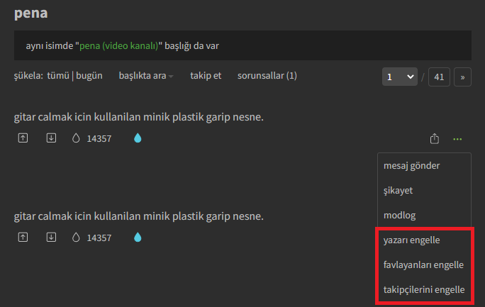
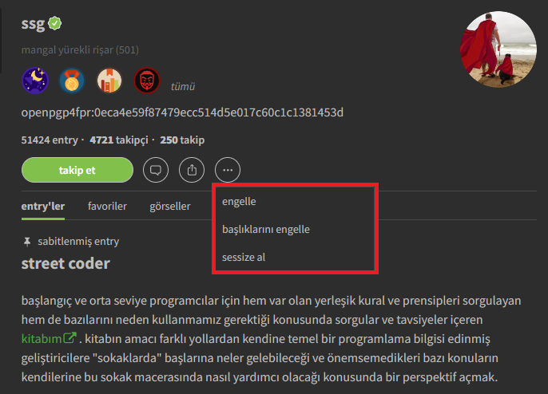

Ekşi Sözlük, Ocak 2023'te engelleme hızına limit getirdi. 2018 yılında entry silme hızına da limit getirmişti.
Ekşi Sözlük'ün artan baskıcı tutumu hakkında bilgi sahibi olmak için
tıklayın
Ayarlar
Engelle veya sessize al.
Çaylak yazarları da engelle.
Takip ettiğim yazarları engelleme.
Sadece gerekli işlemleri yap.
Config dosyası okunamadı.

Kullanım Klavuzu

- Ekşi Sözlük Arayüzü Üzerinden Kullanımı
- Eklenti Menüsünden Kullanımı
-
Eklenti simgesine
 tıklayarak eklenti menüsünü açın.
tıklayarak eklenti menüsünü açın.
Gireceğim Listedeki Yazarları Engelle / Engelini Kaldır butonuna tıklayın.
Elinizdeki yazar listesini metin kutusuna yapıştırıp, Engelle veya Engeli Kaldır butonuna tıklayın. -
Eklenti simgesine tıklayarak eklenti menüsünü açın.
Tüm Engellerimi Kaldır butonuna tıklayın.
-
Entrylerin ayar menüsü güncellendi.

Yazarların sayfasındaki menü güncellendi. 